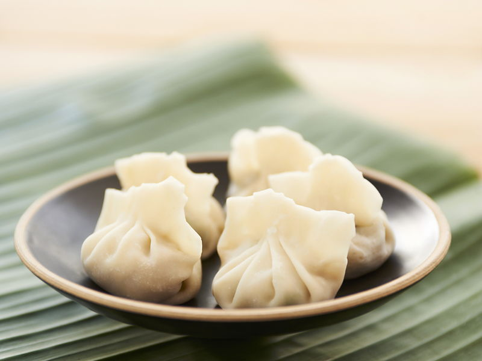

Chinese Dumplings

"Know thy self, know thy enemy. A thousand battles, a thousand
victories."
Here we have the famous chinse dumplings.
This recipe has been passed down by generations
and generations.
Chinese Dumplings are a popular dish in China.
They are among (us) a variety of popular dishes
commonly eaten aroudn Chinese New Year. Impress
your friends with this godlike recipe.
Ingredients
-
For dough, you need:
- 225g plain flour
- 150ml cold water
-
For filling:
- 1/2 bunch of coriander
- 2 spring onions
- 1 cube of ginger
- 1 clove of garlic
- 5 chinese mushrooms
- 1 chinese chive
- 200g pork mince
- For Marinade:
- 2 teaspoons of seasame oil
- 2 tablespoons of soysauce
- 1/4 teaspoons of sugar
Instructions:
- chop all ingredients into similar size pieces, then place in a bowl
and mix well with the marinade.
- For the wrap, place filling into the centre of the dough
- Fold the bottom of the dough up, and then pinch the 2 corners to
create the dumpling shape
- Deep fry at 180 degrees celcius for around 4-5 minutes
- place in vegetable oil and throw in the dumplings
- reduce the heat and periodically pour water into the pan, covering the
lid right after you do so
- once the pan is dry, your dumplings are ready to be served!!!
enjoy!!
back to top
Back to home page